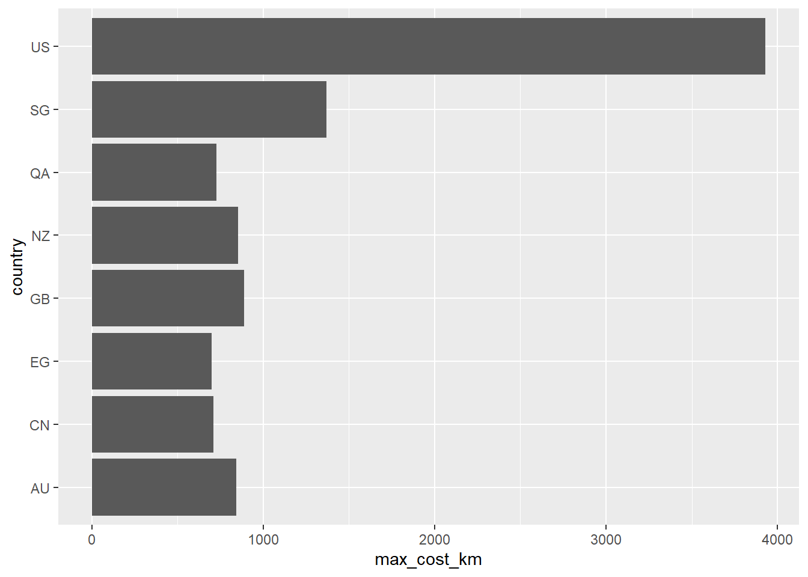

#install.packages("pacman") # Install pacman package
library("pacman") # Load pacman package
p_load(DBI, odbc, RSQLite, tidyverse, dbplyr, tidyquery, countrycode, RMariaDB)SQL and R: A match made for you
Practise
Alright let’s get to it. We will do more practise now with some databases.
Packages needed
SQLite DB Create
First let’s create an in memory DB and explore it.
Open a connection
# Create an in-memory RSQLite DB
con <- dbConnect(RSQLite::SQLite(), ":memory:")
# List tables available through our connection
dbListTables(con) # nothing there yetcharacter(0)Create the table(s)
car_names <- rownames(mtcars) %>%
as_tibble() %>%
rename("CarName" = "value")
mtcars_tbl <- mtcars %>%
as_tibble()
mtcars_tbl <- mtcars_tbl %>%
bind_cols(car_names) %>%
select(CarName, everything())
dbWriteTable(con, # using connection con
"mtcars", # write into a table "mtcars"
mtcars_tbl, # the dataset mtcars
overwrite = TRUE # overwrite the data there if it exists
)Now that we’ve written a table, let’s have a look at what our database contains.
dbListTables(con)[1] "mtcars"dbListFields(con, "mtcars") [1] "CarName" "mpg" "cyl" "disp" "hp" "drat" "wt"
[8] "qsec" "vs" "am" "gear" "carb" Queries using {dplyr}
tbl(con, # using our connection
'mtcars' # reach into the mtcars table
) %>%
select(cyl) %>% distinct()# Source: lazy query [?? x 1]
# Database: sqlite 3.36.0 [:memory:]
cyl
<dbl>
1 6
2 4
3 8tbl(con, "mtcars") %>%
count(cyl)# Source: lazy query [?? x 2]
# Database: sqlite 3.36.0 [:memory:]
cyl n
<dbl> <int>
1 4 11
2 6 7
3 8 14tbl(con, "mtcars") %>%
group_by(cyl) %>%
summarise(mean_disp = mean(disp, na.rm = TRUE),
mean_mpg = mean(mpg, na.rm = TRUE),
med_wt = median(wt, na.rm = TRUE)) # Source: lazy query [?? x 4]
# Database: sqlite 3.36.0 [:memory:]
cyl mean_disp mean_mpg med_wt
<dbl> <dbl> <dbl> <dbl>
1 4 105. 26.7 2.2
2 6 183. 19.7 3.22
3 8 353. 15.1 3.76tbl(con, "mtcars") %>%
mutate(new_car_name =
paste(CarName, cyl, sep = " - ")) %>%
select(CarName, cyl, new_car_name) %>% show_query()<SQL>
SELECT `CarName`, `cyl`, `CarName` || ' - ' || `cyl` AS `new_car_name`
FROM `mtcars`mtcars_from_db <- tbl(con, "mtcars") %>%
collect()
mtcars_from_db %>%
slice_head(n=5)# A tibble: 5 x 12
CarName mpg cyl disp hp drat wt qsec vs am gear carb
<chr> <dbl> <dbl> <dbl> <dbl> <dbl> <dbl> <dbl> <dbl> <dbl> <dbl> <dbl>
1 Mazda RX4 21 6 160 110 3.9 2.62 16.5 0 1 4 4
2 Mazda RX4 W~ 21 6 160 110 3.9 2.88 17.0 0 1 4 4
3 Datsun 710 22.8 4 108 93 3.85 2.32 18.6 1 1 4 1
4 Hornet 4 Dr~ 21.4 6 258 110 3.08 3.22 19.4 1 0 3 1
5 Hornet Spor~ 18.7 8 360 175 3.15 3.44 17.0 0 0 3 2Queries using SQL
-- Let's have a look at a few rows using SQL now (this is a SQL comment - notice the `--`)
SELECT * FROM mtcars
LIMIT 10| CarName | mpg | cyl | disp | hp | drat | wt | qsec | vs | am | gear | carb |
|---|---|---|---|---|---|---|---|---|---|---|---|
| Mazda RX4 | 21.0 | 6 | 160.0 | 110 | 3.90 | 2.620 | 16.46 | 0 | 1 | 4 | 4 |
| Mazda RX4 Wag | 21.0 | 6 | 160.0 | 110 | 3.90 | 2.875 | 17.02 | 0 | 1 | 4 | 4 |
| Datsun 710 | 22.8 | 4 | 108.0 | 93 | 3.85 | 2.320 | 18.61 | 1 | 1 | 4 | 1 |
| Hornet 4 Drive | 21.4 | 6 | 258.0 | 110 | 3.08 | 3.215 | 19.44 | 1 | 0 | 3 | 1 |
| Hornet Sportabout | 18.7 | 8 | 360.0 | 175 | 3.15 | 3.440 | 17.02 | 0 | 0 | 3 | 2 |
| Valiant | 18.1 | 6 | 225.0 | 105 | 2.76 | 3.460 | 20.22 | 1 | 0 | 3 | 1 |
| Duster 360 | 14.3 | 8 | 360.0 | 245 | 3.21 | 3.570 | 15.84 | 0 | 0 | 3 | 4 |
| Merc 240D | 24.4 | 4 | 146.7 | 62 | 3.69 | 3.190 | 20.00 | 1 | 0 | 4 | 2 |
| Merc 230 | 22.8 | 4 | 140.8 | 95 | 3.92 | 3.150 | 22.90 | 1 | 0 | 4 | 2 |
| Merc 280 | 19.2 | 6 | 167.6 | 123 | 3.92 | 3.440 | 18.30 | 1 | 0 | 4 | 4 |
We can even copy the contents of the show_query result into a SQL code block and execute this.
SELECT `CarName`
, `cyl`
, `CarName` || ' - ' || `cyl` AS `new_car_name`
FROM `mtcars`| CarName | cyl | new_car_name |
|---|---|---|
| Mazda RX4 | 6 | Mazda RX4 - 6.0 |
| Mazda RX4 Wag | 6 | Mazda RX4 Wag - 6.0 |
| Datsun 710 | 4 | Datsun 710 - 4.0 |
| Hornet 4 Drive | 6 | Hornet 4 Drive - 6.0 |
| Hornet Sportabout | 8 | Hornet Sportabout - 8.0 |
| Valiant | 6 | Valiant - 6.0 |
| Duster 360 | 8 | Duster 360 - 8.0 |
| Merc 240D | 4 | Merc 240D - 4.0 |
| Merc 230 | 4 | Merc 230 - 4.0 |
| Merc 280 | 6 | Merc 280 - 6.0 |
Once we are done we need to disconnect!
dbDisconnect(con)Work with a created SQLite DB
In the folder you will find another SQLite DB named ticket_to_ride.sqlite.
con <- DBI::dbConnect(RSQLite::SQLite(),
dbname = "ticket_to_ride.sqlite")
dbListTables(con)[1] "country_codes" "transit_cost" tbl(con, "country_codes")# Source: table<country_codes> [?? x 743]
# Database: sqlite 3.36.0
# [C:\Current-Work\prep-db-talk\sql-and-r-botswana\ticket_to_ride.sqlite]
ar5 cctld continent country.name.de country.name.de~ country.name.en
<chr> <chr> <chr> <chr> <chr> <chr>
1 ASIA .af Asia Afghanistan afghan Afghanistan
2 OECD1990 .ax Europe Aland Islands åland Åland Islands
3 EIT .al Europe Albanien albanien Albania
4 MAF .dz Africa Algerien algerien Algeria
5 ASIA .as Oceania Amerikanisch-Samoa ^(?=.*amerik).*~ American Samoa
6 OECD1990 .ad Europe Andorra andorra Andorra
7 MAF .ao Africa Angola angola Angola
8 LAM .ai Americas Anguilla anguill?a Anguilla
9 LAM .aq <NA> Antarktis antarktis Antarctica
10 LAM .ag Americas Antigua und Barbuda antigua Antigua & Barb~
# ... with more rows, and 737 more variables: country.name.en.regex <chr>,
# cow.name <chr>, cowc <chr>, cown <dbl>, currency <chr>, dhs <chr>,
# ecb <chr>, eu28 <chr>, eurocontrol_pru <chr>, eurocontrol_statfor <chr>,
# eurostat <chr>, fao <dbl>, fips <chr>, gaul <dbl>, genc2c <chr>,
# genc3c <chr>, genc3n <chr>, gwc <chr>, gwn <dbl>, icao.region <chr>,
# imf <dbl>, ioc <chr>, iso.name.en <chr>, iso.name.fr <chr>, iso2c <chr>,
# iso3c <chr>, iso3n <dbl>, iso4217c <chr>, iso4217n <dbl>, ...tbl(con, "transit_cost")# Source: table<transit_cost> [?? x 20]
# Database: sqlite 3.36.0
# [C:\Current-Work\prep-db-talk\sql-and-r-botswana\ticket_to_ride.sqlite]
e country city line start_year end_year rr length tunnel_per tunnel
<dbl> <chr> <chr> <chr> <chr> <chr> <dbl> <dbl> <chr> <dbl>
1 7136 CA Vanco~ Broa~ 2020 2025 0 5.7 87.72% 5
2 7137 CA Toron~ Vaug~ 2009 2017 0 8.6 100.00% 8.6
3 7138 CA Toron~ Scar~ 2020 2030 0 7.8 100.00% 7.8
4 7139 CA Toron~ Onta~ 2020 2030 0 15.5 57.00% 8.8
5 7144 CA Toron~ Yong~ 2020 2030 0 7.4 100.00% 7.4
6 7145 NL Amste~ Nort~ 2003 2018 0 9.7 73.00% 7.1
7 7146 CA Montr~ Blue~ 2020 2026 0 5.8 100.00% 5.8
8 7147 US Seatt~ U-Li~ 2009 2016 0 5.1 100.00% 5.1
9 7152 US Los A~ Purp~ 2020 2027 0 4.2 100.00% 4.2
10 7153 US Los A~ Purp~ 2018 2026 0 4.2 100.00% 4.2
# ... with more rows, and 10 more variables: stations <dbl>, source1 <chr>,
# cost <dbl>, currency <chr>, year <dbl>, ppp_rate <dbl>, real_cost <chr>,
# cost_km_millions <dbl>, source2 <chr>, reference <chr>summary_transit <- tbl(con, "transit_cost") %>%
filter(country %in% c("US", "CA")) %>%
group_by(country) %>%
mutate(avg_cost_km = mean(cost_km_millions,
na.rm = TRUE),
max_cost_km = max(cost_km_millions,
na.rm = TRUE)) %>%
ungroup() %>%
select(country, start_year, end_year,
cost_km_millions, avg_cost_km,
max_cost_km) %>%
arrange(desc(avg_cost_km), start_year) %>%
collect()
summary_all_countries <- tbl(con, "transit_cost") %>%
group_by(country) %>%
mutate(avg_cost_km = mean(cost_km_millions,
na.rm = TRUE),
max_cost_km = max(cost_km_millions,
na.rm = TRUE)) %>%
ungroup() %>%
select(country, avg_cost_km,
max_cost_km) %>%
collect()
summary_all_countries %>%
arrange(desc(max_cost_km)) %>%
distinct() %>%
slice_head(n = 8) %>%
ggplot(aes(y = country, x = max_cost_km)) +
geom_col()
dbDisconnect(con)Work with a MSQL DB
In the DBI Documentation there is a reference to a MSQL DB. Let’s connect and see how seamlessly dbplyr handles a new dialect of SQL.
library(DBI)
con <- dbConnect(
RMariaDB::MariaDB(),
host = "relational.fit.cvut.cz",
port = 3306,
username = "guest",
password = "relational",
dbname = "sakila"
)
dbListTables(con) [1] "actor" "address" "category" "city"
[5] "country" "customer" "film" "film_actor"
[9] "film_category" "film_text" "inventory" "language"
[13] "payment" "rental" "staff" "store" tbl(con, "actor") %>%
inner_join(tbl(con, "film_actor"),
by = c("actor_id" = "actor_id")) %>%
inner_join(tbl(con, "film"),
by = c("film_id" = "film_id")) %>%
inner_join(tbl(con, "film_category"),
by = c("film_id" = "film_id")) %>%
inner_join(tbl(con, "category"),
by = c("category_id" = "category_id")) %>%
select(first_name, last_name, title, rating, name, length, replacement_cost, rental_rate) %>%
group_by(first_name, last_name, name) %>%
summarise(mean_duration = mean(length, na.rm=TRUE),
mean_replacement_cost = mean(replacement_cost, na.rm=TRUE),
number_of_category = n())# Source: lazy query [?? x 6]
# Database: mysql [guest@relational.fit.cvut.cz:NA/sakila]
# Groups: first_name, last_name
first_name last_name name mean_duration mean_replacemen~ number_of_categ~
<chr> <chr> <chr> <dbl> <dbl> <int64>
1 ADAM GRANT Action 86 20.0 1
2 ADAM GRANT Children 123. 25.0 3
3 ADAM GRANT Classics 155 14.0 1
4 ADAM GRANT Comedy 148. 25.7 3
5 ADAM GRANT Family 173 21.0 1
6 ADAM GRANT Foreign 136. 27.0 2
7 ADAM GRANT Games 94.7 20.0 3
8 ADAM GRANT Sci-Fi 86 16.0 1
9 ADAM GRANT Sports 96 29.0 2
10 ADAM GRANT Travel 141 18.0 1
# ... with more rowsSELECT first_name
, last_name
, name AS category
, AVG(length) AS mean_duration
, AVG(replacement_cost) AS mean_replacement_cost
, COUNT(name) AS number_of_category
FROM actor a
INNER JOIN film_actor fa ON a.actor_id = fa.actor_id
INNER JOIN film f ON f.film_id = fa.film_id
INNER JOIN film_category fc ON fc.film_id = f.film_id
INNER JOIN category c ON fc.category_id = c.category_id
GROUP BY first_name, last_name, nameagg_mysql %>%
glimpse()Rows: 2,596
Columns: 6
$ first_name <chr> "ADAM", "ADAM", "ADAM", "ADAM", "ADAM", "ADAM", ~
$ last_name <chr> "GRANT", "GRANT", "GRANT", "GRANT", "GRANT", "GR~
$ category <chr> "Action", "Children", "Classics", "Comedy", "Fam~
$ mean_duration <dbl> 86.0000, 123.3333, 155.0000, 147.6667, 173.0000,~
$ mean_replacement_cost <dbl> 19.99000, 24.99000, 13.99000, 25.65667, 20.99000~
$ number_of_category <int64> 1, 3, 1, 3, 1, 2, 3, 1, 2, 1, 2, 1, 1, 2, 2, 1~dbDisconnect(con){tidyquery}
Tidyquery allows you to query a dataframe as though it is a SQL DB table! If you’re more familiar with SQL and want to learn the {tidyverse} this is a good package for that!
class(agg_mysql)[1] "data.frame"query(
"SELECT first_name AS Name
, last_name AS Surname
, category AS Category
, mean_duration AS AvgDuration
FROM agg_mysql
WHERE lower(first_name) = 'adam'
ORDER BY mean_duration DESC"
) Name Surname Category AvgDuration
1 ADAM HOPPER Drama 179.0000
2 ADAM GRANT Family 173.0000
3 ADAM GRANT Classics 155.0000
4 ADAM HOPPER New 149.5000
5 ADAM GRANT Comedy 147.6667
6 ADAM HOPPER Classics 144.0000
7 ADAM GRANT Travel 141.0000
8 ADAM GRANT Foreign 136.5000
9 ADAM HOPPER Music 128.0000
10 ADAM HOPPER Sci-Fi 126.3333
11 ADAM GRANT Children 123.3333
12 ADAM HOPPER Family 122.3333
13 ADAM HOPPER Documentary 117.5000
14 ADAM GRANT Sports 96.0000
15 ADAM GRANT Games 94.6667
16 ADAM GRANT Action 86.0000
17 ADAM GRANT Sci-Fi 86.0000
18 ADAM HOPPER Action 77.5000
19 ADAM HOPPER Foreign 72.0000
20 ADAM HOPPER Horror 71.0000
21 ADAM HOPPER Comedy 64.0000
22 ADAM HOPPER Children 57.0000show_dplyr(
"SELECT first_name AS Name
, last_name AS Surname
, category AS Category
, mean_duration AS AvgDuration
FROM agg_mysql
WHERE lower(first_name) = 'adam'
ORDER BY mean_duration DESC"
)agg_mysql %>%
filter(stringr::str_to_lower(first_name) == "adam") %>%
mutate(Name = first_name, Surname = last_name, Category = category, AvgDuration = mean_duration) %>%
arrange(dplyr::desc(mean_duration)) %>%
select(Name = first_name, Surname = last_name, Category = category, AvgDuration = mean_duration)